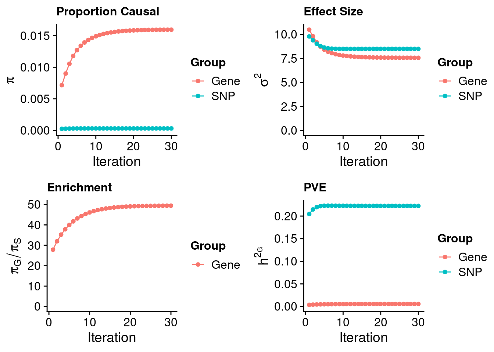
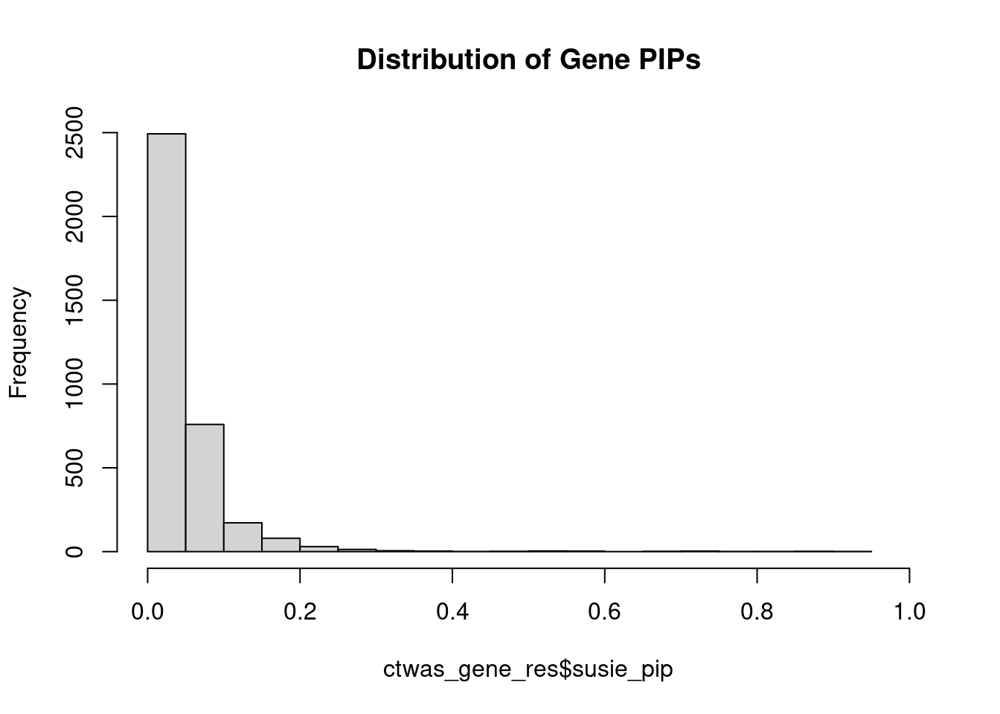
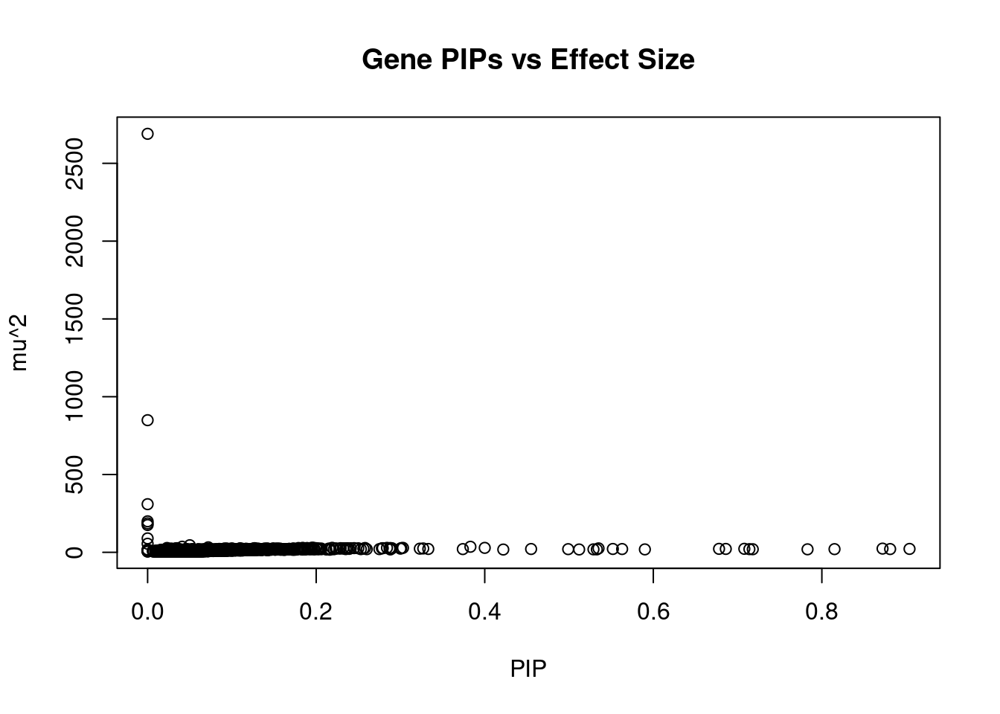
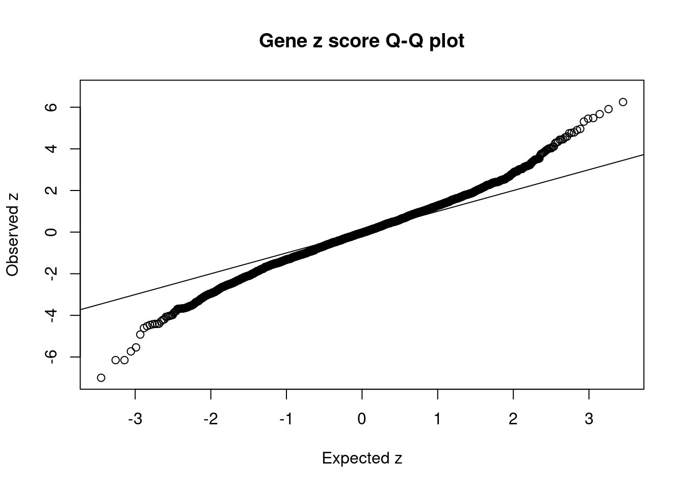
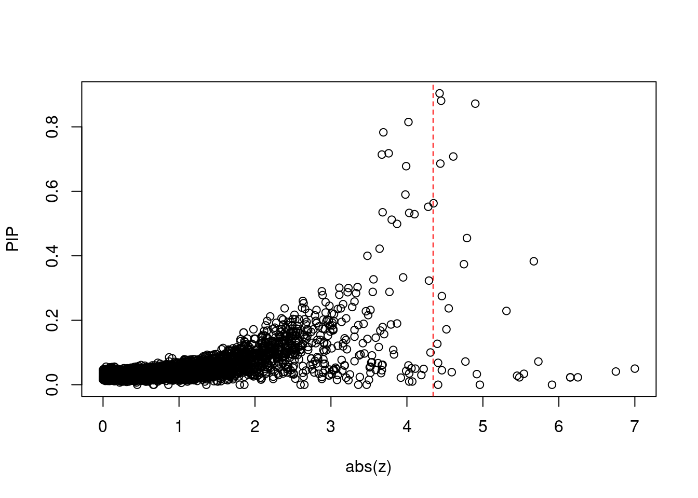
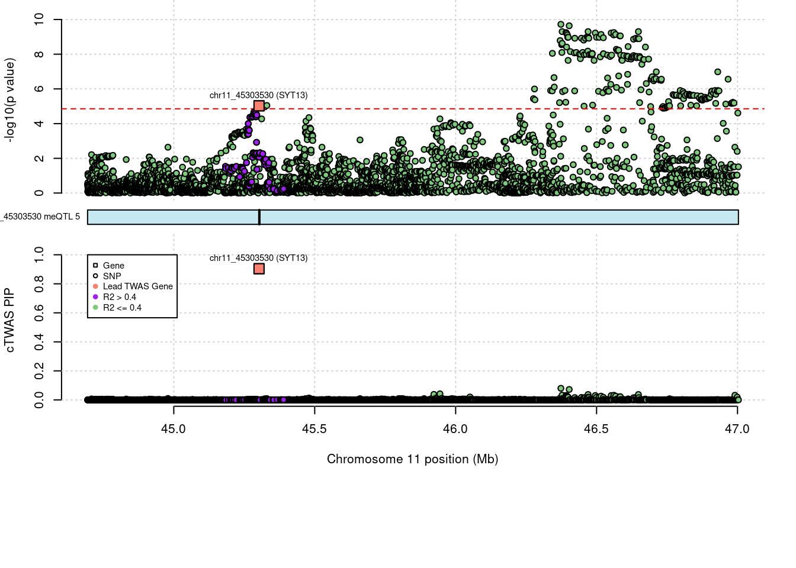
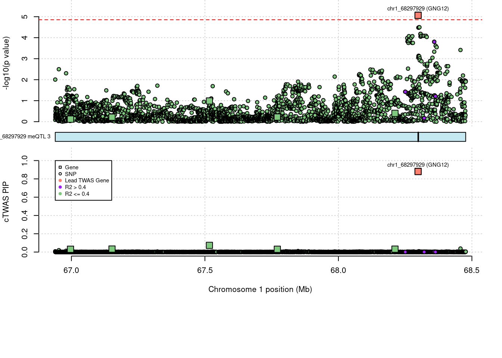
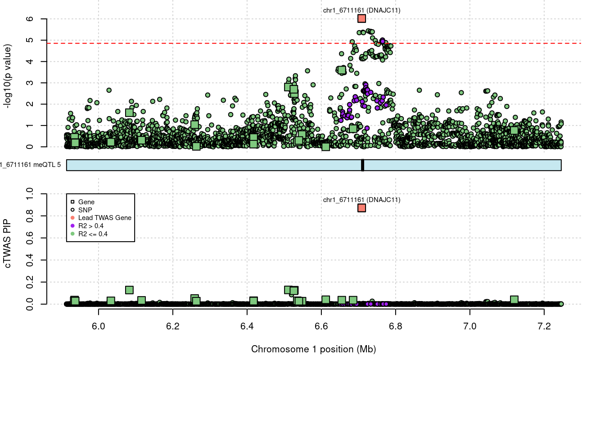

Last updated: 2022-09-05
Checks: 5 2
Knit directory: cTWAS_analysis/
This reproducible R Markdown analysis was created with workflowr (version 1.7.0). The Checks tab describes the reproducibility checks that were applied when the results were created. The Past versions tab lists the development history.
The R Markdown file has unstaged changes. To know which version of the R Markdown file created these results, you’ll want to first commit it to the Git repo. If you’re still working on the analysis, you can ignore this warning. When you’re finished, you can run wflow_publish to commit the R Markdown file and build the HTML.
Great job! The global environment was empty. Objects defined in the global environment can affect the analysis in your R Markdown file in unknown ways. For reproduciblity it’s best to always run the code in an empty environment.
The command set.seed(20211220) was run prior to running the code in the R Markdown file. Setting a seed ensures that any results that rely on randomness, e.g. subsampling or permutations, are reproducible.
Great job! Recording the operating system, R version, and package versions is critical for reproducibility.
Nice! There were no cached chunks for this analysis, so you can be confident that you successfully produced the results during this run.
Using absolute paths to the files within your workflowr project makes it difficult for you and others to run your code on a different machine. Change the absolute path(s) below to the suggested relative path(s) to make your code more reproducible.
| absolute | relative |
|---|---|
| /project2/xinhe/shengqian/cTWAS/cTWAS_analysis/data/SCZ_2014_EUR_ME/ | data/SCZ_2014_EUR_ME |
| /project2/xinhe/shengqian/cTWAS/cTWAS_analysis/code/ctwas_config_b37.R | code/ctwas_config_b37.R |
| /project2/xinhe/shengqian/cTWAS/cTWAS_analysis/data/UKBB/ieu-b-42.vcf.gz | data/UKBB/ieu-b-42.vcf.gz |
Great! You are using Git for version control. Tracking code development and connecting the code version to the results is critical for reproducibility.
The results in this page were generated with repository version d63d8a1. See the Past versions tab to see a history of the changes made to the R Markdown and HTML files.
Note that you need to be careful to ensure that all relevant files for the analysis have been committed to Git prior to generating the results (you can use wflow_publish or wflow_git_commit). workflowr only checks the R Markdown file, but you know if there are other scripts or data files that it depends on. Below is the status of the Git repository when the results were generated:
Ignored files:
Ignored: .Rhistory
Ignored: .ipynb_checkpoints/
Untracked files:
Untracked: G_list.RData
Untracked: Rplot.png
Untracked: SCZ_annotation.xlsx
Untracked: analysis/.ipynb_checkpoints/
Untracked: cache/
Untracked: code/.ipynb_checkpoints/
Untracked: data/.ipynb_checkpoints/
Untracked: data/FUMA_output/
Untracked: data/GO_Terms/
Untracked: data/IBD_ME/
Untracked: data/PGC3_SCZ_wave3_public.v2.tsv
Untracked: data/SCZ/
Untracked: data/SCZ_2014_EUR/
Untracked: data/SCZ_2014_EUR_ME/
Untracked: data/SCZ_2018/
Untracked: data/SCZ_2018_ME/
Untracked: data/SCZ_2018_S/
Untracked: data/SCZ_2020/
Untracked: data/SCZ_S/
Untracked: data/Supplementary Table 15 - MAGMA.xlsx
Untracked: data/Supplementary Table 20 - Prioritised Genes.xlsx
Untracked: data/T2D/
Untracked: data/UKBB/
Untracked: data/UKBB_SNPs_Info.text
Untracked: data/gene_OMIM.txt
Untracked: data/gene_pip_0.8.txt
Untracked: data/gwas_sumstats/
Untracked: data/magma.genes.out
Untracked: data/mashr_Heart_Atrial_Appendage.db
Untracked: data/mashr_sqtl/
Untracked: data/notes.txt
Untracked: data/scz_2018.RDS
Untracked: data/summary_known_genes_annotations.xlsx
Untracked: temp.regionlist.RDS
Untracked: temp.regions.txt
Untracked: temp.susieIrss.txt
Untracked: temp.temp.susieIrssres.Rd
Untracked: temp_LDR/
Untracked: temp_ld_R_chr1.txt
Untracked: temp_ld_R_chr10.txt
Untracked: temp_ld_R_chr11.txt
Untracked: temp_ld_R_chr12.txt
Untracked: temp_ld_R_chr13.txt
Untracked: temp_ld_R_chr14.txt
Untracked: temp_ld_R_chr15.txt
Untracked: temp_ld_R_chr16.txt
Untracked: temp_ld_R_chr17.txt
Untracked: temp_ld_R_chr18.txt
Untracked: temp_ld_R_chr19.txt
Untracked: temp_ld_R_chr2.txt
Untracked: temp_ld_R_chr20.txt
Untracked: temp_ld_R_chr21.txt
Untracked: temp_ld_R_chr22.txt
Untracked: temp_ld_R_chr3.txt
Untracked: temp_ld_R_chr4.txt
Untracked: temp_ld_R_chr5.txt
Untracked: temp_ld_R_chr6.txt
Untracked: temp_ld_R_chr7.txt
Untracked: temp_ld_R_chr8.txt
Untracked: temp_ld_R_chr9.txt
Untracked: temp_reg.txt
Untracked: top_genes_32.txt
Untracked: top_genes_37.txt
Untracked: top_genes_43.txt
Untracked: top_genes_54.txt
Untracked: top_genes_81.txt
Untracked: z_snp_pos_SCZ.RData
Untracked: z_snp_pos_SCZ_2014_EUR.RData
Untracked: z_snp_pos_SCZ_2018.RData
Untracked: z_snp_pos_SCZ_2020.RData
Unstaged changes:
Deleted: analysis/BMI_S_results.Rmd
Modified: analysis/IBD_ME_CpG_level.Rmd
Modified: analysis/SCZ_2014_EUR_ME_CpG_level.Rmd
Modified: analysis/SCZ_2018_ME_CpG_level.Rmd
Note that any generated files, e.g. HTML, png, CSS, etc., are not included in this status report because it is ok for generated content to have uncommitted changes.
These are the previous versions of the repository in which changes were made to the R Markdown (analysis/SCZ_2014_EUR_ME_CpG_level.Rmd) and HTML (docs/SCZ_2014_EUR_ME_CpG_level.html) files. If you’ve configured a remote Git repository (see ?wflow_git_remote), click on the hyperlinks in the table below to view the files as they were in that past version.
| File | Version | Author | Date | Message |
|---|---|---|---|---|
| html | d63d8a1 | sq-96 | 2022-09-05 | update |
| Rmd | 3f3d684 | sq-96 | 2022-09-05 | update |
#number of imputed weights
nrow(qclist_all)[1] 3575#number of imputed weights by chromosome
table(qclist_all$chr)
1 2 3 4 5 6 7 8 9 10 11 12 13 14 15 16 17 18 19 20
553 224 140 119 137 217 198 136 28 193 205 139 64 78 82 106 235 31 428 112
21 22
50 100 #proportion of imputed weights without missing variants
mean(qclist_all$nmiss==0)[1] 0.1055library(reticulate)
use_python("/scratch/midway2/shengqian/miniconda3/envs/PythonForR/bin/python",required=T)finish
| Version | Author | Date |
|---|---|---|
| d63d8a1 | sq-96 | 2022-09-05 |
#estimated group prior
estimated_group_prior <- estimated_group_prior_all[,ncol(group_prior_rec)]
print(estimated_group_prior) gene snp
0.0159385 0.0003225 #estimated group prior variance
estimated_group_prior_var <- estimated_group_prior_var_all[,ncol(group_prior_var_rec)]
print(estimated_group_prior_var) gene snp
7.567 8.497 #estimated enrichment
estimated_enrichment <- estimated_enrichment_all[ncol(group_prior_var_rec)]
print(estimated_enrichment)[1] 49.43#report sample size
print(sample_size)[1] 77096#report group size
print(group_size)[1] 3575 6256830#estimated group PVE
estimated_group_pve <- estimated_group_pve_all[,ncol(group_prior_rec)] #check PVE calculation
print(estimated_group_pve) gene snp
0.005593 0.222358 #total PVE
sum(estimated_group_pve)[1] 0.228#PVE attributable to gene expression
estimated_group_pve["gene"]/sum(estimated_group_pve) gene
0.02454 
| Version | Author | Date |
|---|---|---|
| d63d8a1 | sq-96 | 2022-09-05 |
genename region_tag chrom id pos susie_pip mu2
3575 SYT13 11_28 11 chr11_45303530 45302422 0.904 21.95
3568 GNG12 1_42 1 chr1_68297929 68298448 0.881 20.93
3556 DNAJC11 1_5 1 chr1_6711161 6708758 0.872 23.90
3571 LZTS2 10_64 10 chr10_102756912 102755779 0.815 20.52
1326 ARID1B 6_102 6 chr6_157508679 157507504 0.783 19.33
894 PDE6B 4_1 4 chr4_659281 659371 0.718 19.86
1154 NaN 6_2 6 chr6_1514372 1511560 0.714 20.43
3371 NaN 20_37 20 chr20_62151995 62149867 0.708 22.59
2194 NaN 12_44 12 chr12_72233472 72233949 0.686 21.79
1808 KCNMA1 10_50 10 chr10_78871238 78871713 0.678 22.34
2180 PCBP2 12_33 12 chr12_53869995 53867312 0.590 18.77
2005 AP000721.4 11_35 11 chr11_63742453 63744609 0.563 21.08
1977 PIK3C2A 11_12 11 chr11_17229487 17226896 0.552 21.61
2874 NaN 19_2 19 chr19_1864622 1862746 0.535 25.39
945 FIP1L1 4_39 4 chr4_54975388 54973200 0.533 18.95
2743 SEPT4 17_34 17 chr17_56607967 56606915 0.529 19.09
116 NaN 1_15 1 chr1_22376938 22374032 0.512 18.29
203 FOXO6 1_25 1 chr1_41845592 41843440 0.499 20.35
183 NaN 1_22 1 chr1_36616030 36613704 0.455 21.31
1871 DOCK1 10_79 10 chr10_128810484 128808908 0.422 17.91
PVE z num_meqtl
3575 2.6e-04 -4.43 5
3568 2.4e-04 4.45 3
3556 2.7e-04 4.90 5
3571 2.2e-04 -4.02 3
1326 2.0e-04 3.69 3
894 1.8e-04 3.76 4
1154 1.9e-04 -3.67 5
3371 2.1e-04 -4.61 3
2194 1.9e-04 4.44 1
1808 2.0e-04 -3.99 5
2180 1.4e-04 -3.98 4
2005 1.5e-04 4.35 2
1977 1.5e-04 4.28 1
2874 1.8e-04 -3.68 7
945 1.3e-04 4.03 5
2743 1.3e-04 4.10 4
116 1.2e-04 3.80 6
203 1.3e-04 3.87 6
183 1.3e-04 4.79 3
1871 9.8e-05 -3.64 8
| Version | Author | Date |
|---|---|---|
| d63d8a1 | sq-96 | 2022-09-05 |
genename region_tag chrom id pos susie_pip mu2
1097 IK 5_83 5 chr5_140030758 140029373 0.000 2689.75
833 PCCB 3_84 3 chr3_135996211 135995498 0.000 849.25
1843 WBP1L 10_66 10 chr10_104574429 104571436 0.000 309.42
2445 CD276 15_35 15 chr15_73996268 73993571 0.000 199.27
1842 NaN 10_66 10 chr10_104503620 104500659 0.000 186.12
1848 NaN 10_66 10 chr10_104429532 104427083 0.000 175.66
1846 NEURL1 10_66 10 chr10_105344174 105342672 0.000 89.55
1845 GSTO2 10_66 10 chr10_106035168 106033439 0.000 55.04
1191 NaN 6_21 6 chr6_27740509 27737605 0.050 45.52
1203 ZFP57 6_23 6 chr6_29648628 29645634 0.041 36.15
3498 L3MBTL2 22_17 22 chr22_41601298 41598933 0.383 35.69
1393 MAD1L1 7_3 7 chr7_1980479 1979425 0.072 32.14
42 PLCH2 1_2 1 chr1_2413705 2414896 0.195 29.87
3073 AC104534.3 19_26 19 chr19_39322471 39321899 0.197 28.97
2378 EML1 14_52 14 chr14_100225060 100223304 0.219 28.95
155 NaN 1_20 1 chr1_31156665 31154025 0.184 28.89
93 NaN 1_11 1 chr1_16810147 16808350 0.284 28.66
2298 CLYBL 13_50 13 chr13_100499713 100498273 0.400 28.62
444 PFKFB2 1_107 1 chr1_207224510 207225266 0.303 28.58
2453 IREB2 15_37 15 chr15_78730334 78732754 0.023 28.04
PVE z num_meqtl
1097 0.0e+00 -4.41 7
833 0.0e+00 4.96 2
1843 2.0e-08 5.91 6
2445 0.0e+00 0.86 15
1842 4.1e-12 -3.47 5
1848 9.7e-13 -2.60 3
1846 5.6e-13 -2.65 6
1845 4.3e-12 -3.36 2
1191 2.9e-05 -7.00 5
1203 1.9e-05 6.75 12
3498 1.8e-04 5.67 1
1393 3.0e-05 -5.73 4
42 7.5e-05 3.14 1
3073 7.4e-05 -2.94 2
2378 8.2e-05 -3.04 2
155 6.9e-05 3.02 8
93 1.1e-04 -3.33 2
2298 1.5e-04 3.48 1
444 1.1e-04 -3.35 1
2453 8.3e-06 5.48 1 genename region_tag chrom id pos susie_pip mu2
3556 DNAJC11 1_5 1 chr1_6711161 6708758 0.872 23.90
3575 SYT13 11_28 11 chr11_45303530 45302422 0.904 21.95
3568 GNG12 1_42 1 chr1_68297929 68298448 0.881 20.93
3571 LZTS2 10_64 10 chr10_102756912 102755779 0.815 20.52
3371 NaN 20_37 20 chr20_62151995 62149867 0.708 22.59
1326 ARID1B 6_102 6 chr6_157508679 157507504 0.783 19.33
1808 KCNMA1 10_50 10 chr10_78871238 78871713 0.678 22.34
1154 NaN 6_2 6 chr6_1514372 1511560 0.714 20.43
2194 NaN 12_44 12 chr12_72233472 72233949 0.686 21.79
894 PDE6B 4_1 4 chr4_659281 659371 0.718 19.86
2874 NaN 19_2 19 chr19_1864622 1862746 0.535 25.39
3498 L3MBTL2 22_17 22 chr22_41601298 41598933 0.383 35.69
1977 PIK3C2A 11_12 11 chr11_17229487 17226896 0.552 21.61
2005 AP000721.4 11_35 11 chr11_63742453 63744609 0.563 21.08
2298 CLYBL 13_50 13 chr13_100499713 100498273 0.400 28.62
2180 PCBP2 12_33 12 chr12_53869995 53867312 0.590 18.77
183 NaN 1_22 1 chr1_36616030 36613704 0.455 21.31
203 FOXO6 1_25 1 chr1_41845592 41843440 0.499 20.35
945 FIP1L1 4_39 4 chr4_54975388 54973200 0.533 18.95
2743 SEPT4 17_34 17 chr17_56607967 56606915 0.529 19.09
PVE z num_meqtl
3556 0.00027 4.90 5
3575 0.00026 -4.43 5
3568 0.00024 4.45 3
3571 0.00022 -4.02 3
3371 0.00021 -4.61 3
1326 0.00020 3.69 3
1808 0.00020 -3.99 5
1154 0.00019 -3.67 5
2194 0.00019 4.44 1
894 0.00018 3.76 4
2874 0.00018 -3.68 7
3498 0.00018 5.67 1
1977 0.00015 4.28 1
2005 0.00015 4.35 2
2298 0.00015 3.48 1
2180 0.00014 -3.98 4
183 0.00013 4.79 3
203 0.00013 3.87 6
945 0.00013 4.03 5
2743 0.00013 4.10 4 genename region_tag chrom id pos susie_pip mu2
1191 NaN 6_21 6 chr6_27740509 27737605 0.050 45.52
1203 ZFP57 6_23 6 chr6_29648628 29645634 0.041 36.15
1197 ZSCAN16 6_22 6 chr6_28092343 28089699 0.023 19.49
1195 NaN 6_22 6 chr6_28129481 28131153 0.023 18.64
1199 NaN 6_22 6 chr6_28129313 28126834 0.023 18.62
1843 WBP1L 10_66 10 chr10_104574429 104571436 0.000 309.42
1393 MAD1L1 7_3 7 chr7_1980479 1979425 0.072 32.14
3498 L3MBTL2 22_17 22 chr22_41601298 41598933 0.383 35.69
1207 OR2J2 6_23 6 chr6_29141678 29139786 0.034 24.85
2453 IREB2 15_37 15 chr15_78730334 78732754 0.023 28.04
1211 ZFP57 6_23 6 chr6_29648623 29645634 0.028 24.46
2662 ATPAF2 17_15 17 chr17_17910374 17909775 0.229 26.66
833 PCCB 3_84 3 chr3_135996211 135995498 0.000 849.25
1193 NaN 6_21 6 chr6_27729346 27726467 0.033 24.95
3556 DNAJC11 1_5 1 chr1_6711161 6708758 0.872 23.90
183 NaN 1_22 1 chr1_36616030 36613704 0.455 21.31
791 NaN 3_36 3 chr3_52827704 52825585 0.072 23.12
180 NaN 1_22 1 chr1_36616028 36613704 0.374 20.70
3371 NaN 20_37 20 chr20_62151995 62149867 0.708 22.59
792 STAB1 3_36 3 chr3_52556384 52555316 0.039 18.13
PVE z num_meqtl
1191 2.9e-05 -7.00 5
1203 1.9e-05 6.75 12
1197 5.7e-06 6.25 4
1195 5.6e-06 -6.15 3
1199 5.6e-06 -6.15 10
1843 2.0e-08 5.91 6
1393 3.0e-05 -5.73 4
3498 1.8e-04 5.67 1
1207 1.1e-05 -5.54 1
2453 8.3e-06 5.48 1
1211 9.0e-06 5.45 17
2662 7.9e-05 5.31 3
833 0.0e+00 4.96 2
1193 1.1e-05 -4.92 7
3556 2.7e-04 4.90 5
183 1.3e-04 4.79 3
791 2.2e-05 4.77 2
180 1.0e-04 4.75 3
3371 2.1e-04 -4.61 3
792 9.1e-06 4.59 5
| Version | Author | Date |
|---|---|---|
| d63d8a1 | sq-96 | 2022-09-05 |

| Version | Author | Date |
|---|---|---|
| d63d8a1 | sq-96 | 2022-09-05 |
[1] 0.008671 genename region_tag chrom id pos susie_pip mu2
1191 NaN 6_21 6 chr6_27740509 27737605 0.050 45.52
1203 ZFP57 6_23 6 chr6_29648628 29645634 0.041 36.15
1197 ZSCAN16 6_22 6 chr6_28092343 28089699 0.023 19.49
1195 NaN 6_22 6 chr6_28129481 28131153 0.023 18.64
1199 NaN 6_22 6 chr6_28129313 28126834 0.023 18.62
1843 WBP1L 10_66 10 chr10_104574429 104571436 0.000 309.42
1393 MAD1L1 7_3 7 chr7_1980479 1979425 0.072 32.14
3498 L3MBTL2 22_17 22 chr22_41601298 41598933 0.383 35.69
1207 OR2J2 6_23 6 chr6_29141678 29139786 0.034 24.85
2453 IREB2 15_37 15 chr15_78730334 78732754 0.023 28.04
1211 ZFP57 6_23 6 chr6_29648623 29645634 0.028 24.46
2662 ATPAF2 17_15 17 chr17_17910374 17909775 0.229 26.66
833 PCCB 3_84 3 chr3_135996211 135995498 0.000 849.25
1193 NaN 6_21 6 chr6_27729346 27726467 0.033 24.95
3556 DNAJC11 1_5 1 chr1_6711161 6708758 0.872 23.90
183 NaN 1_22 1 chr1_36616030 36613704 0.455 21.31
791 NaN 3_36 3 chr3_52827704 52825585 0.072 23.12
180 NaN 1_22 1 chr1_36616028 36613704 0.374 20.70
3371 NaN 20_37 20 chr20_62151995 62149867 0.708 22.59
792 STAB1 3_36 3 chr3_52556384 52555316 0.039 18.13
PVE z num_meqtl
1191 2.9e-05 -7.00 5
1203 1.9e-05 6.75 12
1197 5.7e-06 6.25 4
1195 5.6e-06 -6.15 3
1199 5.6e-06 -6.15 10
1843 2.0e-08 5.91 6
1393 3.0e-05 -5.73 4
3498 1.8e-04 5.67 1
1207 1.1e-05 -5.54 1
2453 8.3e-06 5.48 1
1211 9.0e-06 5.45 17
2662 7.9e-05 5.31 3
833 0.0e+00 4.96 2
1193 1.1e-05 -4.92 7
3556 2.7e-04 4.90 5
183 1.3e-04 4.79 3
791 2.2e-05 4.77 2
180 1.0e-04 4.75 3
3371 2.1e-04 -4.61 3
792 9.1e-06 4.59 5Loading required package: S4VectorsLoading required package: stats4Loading required package: BiocGenerics
Attaching package: 'BiocGenerics'The following objects are masked from 'package:stats':
IQR, mad, sd, var, xtabsThe following objects are masked from 'package:base':
anyDuplicated, append, as.data.frame, basename, cbind, colnames,
dirname, do.call, duplicated, eval, evalq, Filter, Find, get, grep,
grepl, intersect, is.unsorted, lapply, Map, mapply, match, mget,
order, paste, pmax, pmax.int, pmin, pmin.int, Position, rank,
rbind, Reduce, rownames, sapply, setdiff, sort, table, tapply,
union, unique, unsplit, which.max, which.min
Attaching package: 'S4Vectors'The following object is masked from 'package:base':
expand.gridLoading required package: IRangesLoading required package: GenomicRangesLoading required package: GenomeInfoDbLoading required package: grida <- locus_plot_final_pub(region_tag="11_28", return_table=T,
focus=NULL,
label_genes=NULL,
rerun_ctwas=F,
rerun_load_only=F,
label_panel="both",
legend_side="left",
legend_panel="cTWAS")
| Version | Author | Date |
|---|---|---|
| d63d8a1 | sq-96 | 2022-09-05 |
a <- locus_plot_final_pub(region_tag="1_42", return_table=T,
focus=NULL,
label_genes=NULL,
rerun_ctwas=F,
rerun_load_only=F,
label_panel="both",
legend_side="left",
legend_panel="cTWAS")
| Version | Author | Date |
|---|---|---|
| d63d8a1 | sq-96 | 2022-09-05 |
a <- locus_plot_final_pub(region_tag="1_5", return_table=T,
focus=NULL,
label_genes=NULL,
rerun_ctwas=F,
rerun_load_only=F,
label_panel="both",
legend_side="left",
legend_panel="cTWAS")
| Version | Author | Date |
|---|---|---|
| d63d8a1 | sq-96 | 2022-09-05 |
sessionInfo()R version 4.1.0 (2021-05-18)
Platform: x86_64-pc-linux-gnu (64-bit)
Running under: Scientific Linux 7.4 (Nitrogen)
Matrix products: default
BLAS/LAPACK: /software/openblas-0.3.13-el7-x86_64/lib/libopenblas_haswellp-r0.3.13.so
locale:
[1] LC_CTYPE=en_US.UTF-8 LC_NUMERIC=C
[3] LC_TIME=en_US.UTF-8 LC_COLLATE=en_US.UTF-8
[5] LC_MONETARY=en_US.UTF-8 LC_MESSAGES=en_US.UTF-8
[7] LC_PAPER=en_US.UTF-8 LC_NAME=C
[9] LC_ADDRESS=C LC_TELEPHONE=C
[11] LC_MEASUREMENT=en_US.UTF-8 LC_IDENTIFICATION=C
attached base packages:
[1] grid stats4 stats graphics grDevices utils datasets
[8] methods base
other attached packages:
[1] Gviz_1.38.4 GenomicRanges_1.46.0 GenomeInfoDb_1.26.7
[4] IRanges_2.24.1 S4Vectors_0.28.1 BiocGenerics_0.40.0
[7] biomaRt_2.50.0 cowplot_1.1.1 ggplot2_3.3.6
[10] reticulate_1.26 workflowr_1.7.0
loaded via a namespace (and not attached):
[1] backports_1.2.1 Hmisc_4.5-0
[3] BiocFileCache_2.2.0 lazyeval_0.2.2
[5] splines_4.1.0 BiocParallel_1.28.0
[7] digest_0.6.29 ensembldb_2.18.4
[9] htmltools_0.5.3 fansi_1.0.3
[11] magrittr_2.0.3 checkmate_2.0.0
[13] memoise_2.0.1 BSgenome_1.62.0
[15] cluster_2.1.2 Biostrings_2.62.0
[17] matrixStats_0.62.0 prettyunits_1.1.1
[19] jpeg_0.1-8.1 colorspace_2.0-3
[21] blob_1.2.3 rappdirs_0.3.3
[23] xfun_0.24 dplyr_1.0.9
[25] callr_3.7.0 crayon_1.5.1
[27] RCurl_1.98-1.6 jsonlite_1.8.0
[29] survival_3.2-11 VariantAnnotation_1.40.0
[31] glue_1.6.2 gtable_0.3.0
[33] zlibbioc_1.40.0 XVector_0.34.0
[35] DelayedArray_0.20.0 scales_1.2.0
[37] DBI_1.1.2 Rcpp_1.0.9
[39] progress_1.2.2 htmlTable_2.2.1
[41] foreign_0.8-81 bit_4.0.4
[43] Formula_1.2-4 htmlwidgets_1.5.3
[45] httr_1.4.3 RColorBrewer_1.1-3
[47] ellipsis_0.3.2 pkgconfig_2.0.3
[49] XML_3.99-0.6 farver_2.1.0
[51] nnet_7.3-16 sass_0.4.0
[53] dbplyr_2.1.1 utf8_1.2.2
[55] here_1.0.1 tidyselect_1.1.2
[57] labeling_0.4.2 rlang_1.0.4
[59] later_1.2.0 AnnotationDbi_1.56.1
[61] munsell_0.5.0 tools_4.1.0
[63] cachem_1.0.6 cli_3.3.0
[65] generics_0.1.2 RSQLite_2.2.14
[67] evaluate_0.15 stringr_1.4.0
[69] fastmap_1.1.0 yaml_2.2.1
[71] processx_3.5.3 knitr_1.33
[73] bit64_4.0.5 fs_1.5.2
[75] purrr_0.3.4 KEGGREST_1.34.0
[77] AnnotationFilter_1.18.0 whisker_0.4
[79] xml2_1.3.2 compiler_4.1.0
[81] rstudioapi_0.13 filelock_1.0.2
[83] curl_4.3.2 png_0.1-7
[85] tibble_3.1.7 bslib_0.4.0
[87] stringi_1.7.6 highr_0.9
[89] ps_1.7.0 GenomicFeatures_1.46.1
[91] lattice_0.20-44 ProtGenerics_1.26.0
[93] Matrix_1.3-3 vctrs_0.4.1
[95] pillar_1.7.0 lifecycle_1.0.1
[97] jquerylib_0.1.4 data.table_1.14.2
[99] bitops_1.0-7 httpuv_1.6.1
[101] rtracklayer_1.54.0 R6_2.5.1
[103] BiocIO_1.4.0 latticeExtra_0.6-29
[105] promises_1.2.0.1 gridExtra_2.3
[107] dichromat_2.0-0.1 assertthat_0.2.1
[109] SummarizedExperiment_1.24.0 rprojroot_2.0.3
[111] rjson_0.2.20 withr_2.5.0
[113] GenomicAlignments_1.30.0 Rsamtools_2.10.0
[115] GenomeInfoDbData_1.2.7 parallel_4.1.0
[117] hms_1.1.1 rpart_4.1-15
[119] rmarkdown_2.9 MatrixGenerics_1.6.0
[121] git2r_0.28.0 biovizBase_1.42.0
[123] getPass_0.2-2 Biobase_2.54.0
[125] base64enc_0.1-3 restfulr_0.0.13